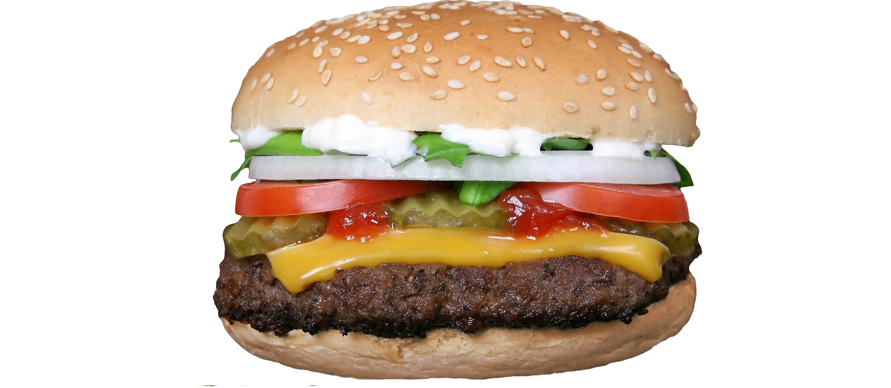

Welcome to Hungry Henry's, the all-American dine-in, take-out and caterer! We have all of your favorites, including classics
that are sure to please everyone. Established in 1995, we have continued to bring quality, flavor and value
to the midwest for nearly 25 years. Our promise to use top-notch ingredients, timeless recipes and fair pricing is
one we're determined to uphold for generations to come.